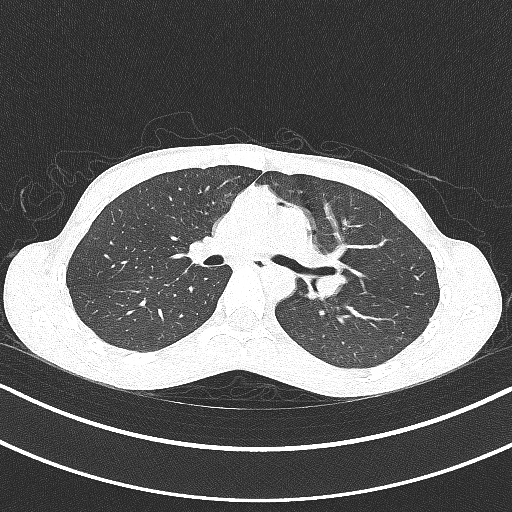

3D model from CT scan images
I wanted to share a programming project that I’ve been working on and am quite proud of. It’s definitely not finished, but I’ve already gotten some interesting results from it!
Fairly recently, I was diagnosed with a rare autoimmune disease. My specific case carries a risk for a specific side effect involving the lungs, so I had to get a CT scan to screen for that. The scanner itself was an amazing piece of technology and seeing it and what it could do for people was one of the things that prompted me to pursue the biomedical option within electrical engineering.

Thankfully, the scan was clear, and I wanted to get the raw image files generated by these scans. I initially contacted the Vancouver General Hospital Health Records department, but they were only able to send me the reports from the radiologists, not the pictures from the scans themselves. I had to contact the VGH film library to request my images. It cost about $60, and they just sent me a CD with the images on them in a weird file format, as well as a program to view the images. CT scan images are represented as images of slices through the person being scanned, kind of like a cross section. I wanted to take a sequence of these images and turn them into a 3D model of myself.

This is where the programming starts! For some initial tests, I used the included program to manually save each image from the MRI as a PNG with each filename corresponding to the image’s number in the sequence.
I also needed to choose what kind of 3D file I was going to use as the output. I chose the OBJ file format because I read a blog post where someone had to generate a 3D model file, and they used the OBJ file format and explained it well in the blog post.
I then started to write the main Python script to turn a sequence of images into a 3D model file. In the interest of breaking my task down into sub-tasks, I realized I needed my program to do 3 things: generate all the vertexes for the 3D model, create the facets between the vertexes, and write the vertexes and facets to a file. To generate the vertexes for the 3D model, I needed to find out where the edges of the image were, so using the Python Image Library, I loaded each image in the sequence into the program, ran edge detection on them, and write all the points with a value higher than a certain threshold (the images are grayscale) to a list (the x and y coordinates are just the coordinates of the point on the image, and the z coordinate is calculated from the current image number in the sequence).
The script then goes through the list of points and determines the nearest neighbouring points to the current point, and then it creates a facet using those points. It then just simply writes these generated vertexes and facets to the output file.
You probably cringed when I said that I manually saved each MRI image using the included program, and that is because that is an easily automated task. I was also always going to need to automate image exporting from the program because while the MRI yielded about 40 images, each set of CT scan images yields about 350, so it would not be feasible for me to manually save all those images. To automate this task, I wrote another Python script using pyautogui, as I had used it before when writing auto-clicking scripts for Minecraft. I simply figured out what mouse movement, mouse click, and key presses I needed to execute to save one image to a file, and then I just iterated through the entire image sequence. I needed to include some sleep statements to account for delays that exist in the human interface of the image viewer program, so it ended up taking about 20 minutes to save an entire sequence of 350 images.
The script of course didn’t work first try, and I had to do a lot of debugging to get it to work (no matter what I tell myself, code written at 2 AM will NEVER be good), but I finally started getting some really interesting results! I ran some tests with simple sequences of images that I made using paint before moving on to the actual MRI and CT images.


After getting some success with making test images I moved onto working with the actual pictures from the scans. I found that the images from the high-contrast scans worked really well, because the edges of the models were more defined. I also added a line to the code to downscale the images from 512x512 to 100x100 as they were imported into the program, which greatly increased the speed of the program, simply because there were fewer points that it needed to use.
The speed of this program is also an interesting topic to touch on. Since it is written in Python, it is of course slower than a similar program written in a compiled language like C, however I think the ease of use of Python as well as the abundance of pre-written, easy-to-use libraries for things like image processing make the speed trade-off worth it. In addition to downscaling the images, I also implemented restrictions on the search depth when the program was searching for close vertexes. My reasoning was that the vertexes closest to the current vertex are going to be within a certain margin, so I could restrict my search depth to that margin and avoid searching through all the vertexes to find the nearest ones and wasting a lot of time.

This whole project is really a testament to the power of external libraries in Python. The final line count for this whole project (the image saving script and the image to 3D file script) ended up being around 100 lines, which for a program that does a complex task like turning a sequence of images into a 3D model, is quite low! I also like how I started writing the program without obsessing too much over if I was writing it “properly” in a fast and highly optimized language. I find that the real joy of programming comes from writing something that does something cool, and the more you can do that, the more joy you will derive from programming, even if that means your program takes half an hour to run.
It may not be a super useful project, but it was still a great way for me to practice my programming skills, and a great way for me to get my feet wet in generating 3D models. I have uploaded the code for this project to a GitHub repository, if you want to check it out.